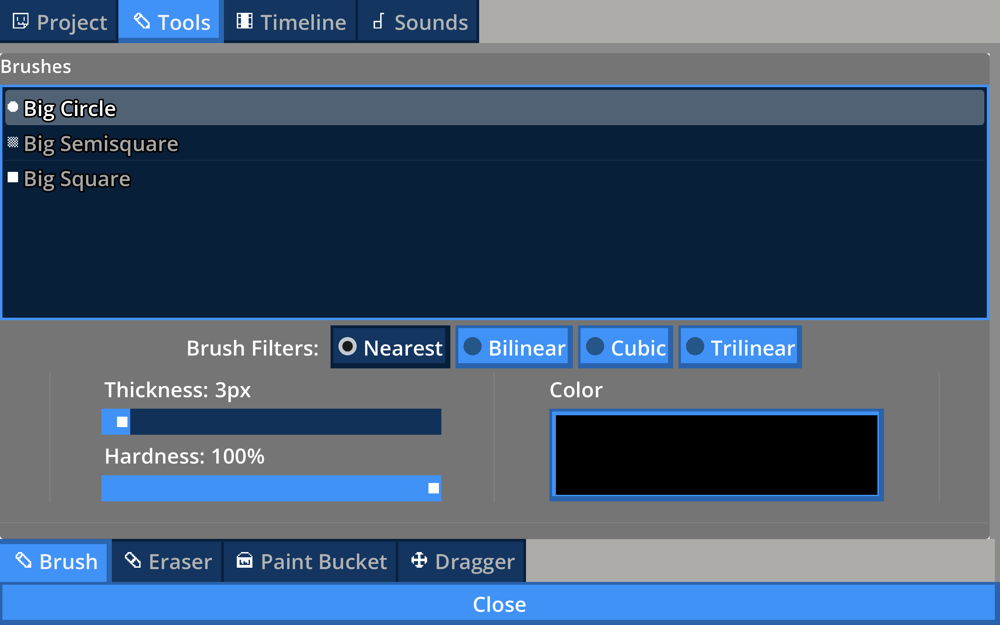
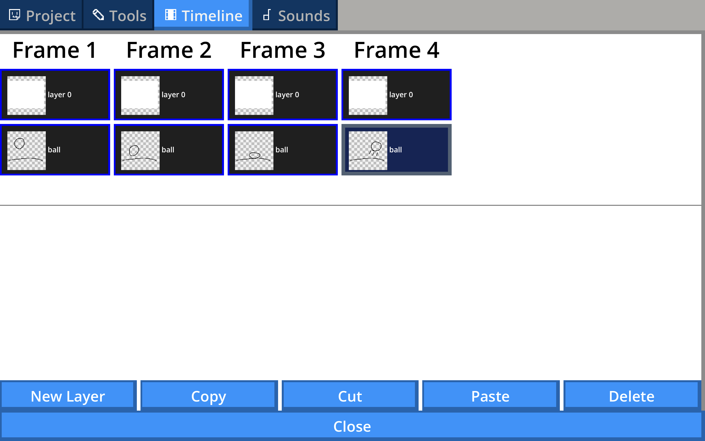

Engineered a parameterized brush and eraser system with adjustable size, hardness, color, and brush styles, using custom stroke interpolation and alpha-based brush filtering for responsive real-time drawing.

An animation tool built in Godot that is modeled after old handheld animation tools, designed to be fun and easy to use.
Engineered a parameterized brush and eraser system with adjustable size, hardness, color, and brush styles, using custom stroke interpolation and alpha-based brush filtering for responsive real-time drawing.


Developed a custom animation timeline and layer editor in Godot, supporting multi-layer selection, batch copy/cut/paste/delete operations, and cross-frame layer manipulation through a structured frame-layer data model.